He pānui — About this course
He aha tēnei akoranga?
Te Pā Tūwatawata is the anchor case study for this course. Built from a radical pedagogy framework, it connects Indigenous data governance to the lived realities of algorithmic extraction, colonial data infrastructure, and the struggle for Māori digital futures.
This course is free and open. Each module combines te reo Māori framing with English discussion, primary sources from kaupapa Māori research, and critical questions for further inquiry. The symbolism of kōwhaiwhai — whakapapa, life, protection, abundance — runs through every page.
Tohu — Symbolism
The design language of this site
Every visual element here draws from the traditional kōwhaiwhai palette and motif vocabulary. Kōwhaiwhai were painted on the heke (rafters) of wharenui — they told stories of whakapapa, protected the people within, and connected the present to the ancestors. The same logic applies here.
The kōwhaiwhai band at the top represents whakapapa — the genealogical line connecting ancestors to descendants, as painted on the tahuhu (ridgepole) of a wharenui. The niho taniwha (taniwha teeth) borders signal protection and the strength of those who guard what is inside. The ghost koru in the hero section represents the course itself: something new unfolding, drawing energy from its origin.
Tohu — Share the symbolism
Each motif carries a campaign message. Copy the tweet, download the image, post and tag #KiwiDialectic #TinoRangatiratanga #MāoriDataSovereignty.
Koru — New life / beginnings
Ko wai nāu i hanga? — Who built the systems that govern your data? The koru unfurls, but who decides which direction? Take the free course. #KiwiDialectic #MāoriDataSovereignty 🌿
↓ Download X card{kind=link}
Pā Tūwatawata — Protection
A pā was not just a fortress. It was a way of organising community. Te Pā Tūwatawata is doing the same thing — but for Māori data. Who holds the palisade? #TinoRangatiratanga
↓ Download X card{kind=link}
Niho Taniwha — Challenge
The taniwha's teeth are at the threshold. Every time an AI model trains on Māori language, stories, or faces without consent — that's a bite. He raupatu tonu tēnei. #AIActivism
↓ Download X card{kind=link}
Kōwhaiwhai — Genealogy / law
Ko te tikanga te ture tuatahi. Tikanga is the first law. It was here before the Treaty, before Parliament, before the internet. Any tech that ignores it is operating outside the law. #KaupapaMāori
↓ Download X card{kind=link}
Unaunahi — Collective armour
Fish scales interlock. No single scale holds the whole — but together they form armour. Ko tātou he kahu. Data sovereignty is not individual. It is collective. Kotahitanga. #Unaunahi
↓ Download Unaunahi card{kind=link}
Takarangi — Duality / future
Ka huri ka huri — it turns and turns. Two spirals, past and future, wound together. The digital future is not separate from te ao Māori. Ko tātou te anamata. #SovereignFutures
↓ Download X card{kind=link}
Ngā tohu e ono — Go deeper
Every motif has its own page.
Cultural context, art history, political meaning, learning activities, X threads, social cards — one dedicated page per motif. Explore the full design language of this course.
Ngā akoranga — Course modules
Ono akoranga
Click any module to read the full lesson, discussion notes, and resources.
Module 1 →
Whakapapa o te raraunga
The whakapapa of data — where does data come from, and who does it belong to?
Module 2 →
Te Pā Tūwatawata hei tauira
Te Pā Tūwatawata as a model for Indigenous-led digital infrastructure and self-determination.
Module 3 →
AI me te raupatu matihiko
AI and digital extraction — tracing the colonial logic inside machine learning.
Module 4 →
Tikanga, ture, mana whakahaere
Tikanga, law, and governance — how Māori legal frameworks challenge tech power.
Module 5 →
Hoahoa tika
Designing ethical systems — what does a decolonised AI architecture look like?
Module 6 →
He anamata rangatira
Sovereign digital futures — building Māori-controlled infrastructure for generations.
Akoranga — Learn deeper · Share further
Module 1 — Activity
Data whakapapa map
Draw a whakapapa of your own data: where was it born, who holds it, where has it travelled? Map it like an ancestor chart. What does that reveal?
Tweet prompt: "I just mapped the whakapapa of my data. Try it — draw every company that holds something you shared. The result is haunting. Module 1 👉 [link] #KiwiDialectic"
Module 2 — Activity
Design your own pā
If you were to build a digital pā for your community — who would be inside? What tikanga would govern access? Draw the walls, the gates, the kaitiaki.
Tweet prompt: "What would a digital pā look like — built on tikanga instead of terms of service? Module 2 blew my mind. Free course 👉 [link] #TePāTūwatawata"
Module 3 — Activity
Raupatu audit
Name one AI product that uses indigenous data without consent. Research it. Who profits? Who loses? Write 200 words in te reo or English — or both.
Tweet prompt: "AI companies are training on Māori voices, faces, and waiata without consent. This is raupatu in digital form. He raupatu tonu tēnei. #AIActivism #MāoriDataSovereignty"
Module 4 — Activity
Tikanga test
Take any tech company's privacy policy. Apply three tikanga principles to it: whakapapa (relationship), mana (authority), kaitiakitanga (guardianship). Does it pass?
Tweet prompt: "Applied tikanga to Google's privacy policy. It fails on whakapapa, mana, AND kaitiakitanga. Ko te tikanga te ture tuatahi. Module 4 👉 [link] #KaupapaMāori"
Module 5 — Activity
Ethics by design
Redesign one feature of a social media platform using unaunahi logic — interlocking layers, collective protection. Draw it. What changes? What disappears?
Tweet prompt: "What if social media was built like unaunahi — fish scales, each one protecting the next? Collective design over extraction. Module 5 👉 [link] #EthicalDesign"
Module 6 — Activity
Manifesto haiku
Write a three-line manifesto for sovereign digital futures in te reo Māori. No English allowed. Post it. Tag #KiwiDialectic. Watch what happens.
Tweet prompt: "Ko tātou te anamata. Finished Module 6 of this free course on Māori data sovereignty. My brain is restructured. Take it. 👉 [link] #SovereignFutures #TinoRangatiratanga"
Ready-to-post X/Twitter thread — copy and fire
1/ AI is the latest form of raupatu. Here's what that means — and what Māori are doing about it. 🧵 #AIActivism #MāoriDataSovereignty 2/ Raupatu = land confiscation. 1860s. The Crown took land without consent. In 2024, tech companies take Māori language, faces, waiata, and stories to train AI — also without consent. Different century. Same logic. 3/ Te Pā Tūwatawata is the answer. Māori-owned, tikanga-governed digital infrastructure. Servers on marae. Data stays in the community. This is what sovereignty looks like in the 21st century. tepatuwatawata.io 4/ Ko te tikanga te ture tuatahi. Tikanga is the first law. It predates Parliament, predates the internet, predates AI. Any technology that ignores tikanga is operating illegally in te ao Māori. 5/ The course is free. Six modules. Bilingual. Built on the work of Te Mana Raraunga, Kāhui Raraunga, and Te Hiku Media. Start here 👉 [link] #KiwiDialectic #TePāTūwatawata
Kete akoranga — Teaching toolkit
Free teaching resources
Five downloadable PDFs for educators, community facilitators, researchers, and activists. Free to print, reproduce, and share under Creative Commons CC BY-NC-SA 4.0.
PDF 1 ↓
Teacher's Handbook
Radical pedagogy framework (Freire, Graeber, Kropotkin, kaupapa Māori) + six full lesson plans with Freirean opening activities, discussion questions, and action steps.
te-pa-teachers-handbook.pdf
PDF 2 ↓
Arts & Creative Pedagogy Kit
Māori motif guide (koru, kōwhaiwhai, niho taniwha, unaunahi, takarangi) · six arts activities · concrete poetry exercises · kōwhaiwhai design instruction · assessment via kaupapa Māori criteria.
te-pa-arts-pedagogy-kit.pdf
PDF 3 ↓
Student Activity Sheets
Six reproducible A4 handouts — one per module. Each includes: motif meaning, key quote, reading questions, concept map, and writing or design activity. Print-ready.
te-pa-student-activity-sheets.pdf
PDF 4 ↓
He Pakiaka Kei Raro — The Underground Web
Deep research framework: Deleuze & Guattari's rhizome theory, whakapapa as network, mua/muri temporality, Kaupapa Māori deterritorialisation, and 8 concrete activist tools. Freire · Beuys · Graeber · Kropotkin.
te-pa-rhizome-framework.pdf
PDF 5 ↓
Toi i te Ara — Indigenous Street Art Research
Comprehensive research on Māori street art traditions (TMD, Askew One, Tāme Iti), te reo activist phrases, global indigenous activism (Zapatistas, Idle No More, Standing Rock), sticker design conventions, and Kaupapa Māori art pedagogy.
te-pa-street-art-research.pdf
All PDFs are free to print, copy, and adapt for non-commercial educational use under CC BY-NC-SA 4.0. Attribution: The Kiwi Dialectic — kiwidialectic.com.
Ōhanga — How to use these resources
In the classroom
Print the Teacher's Handbook. Open with a Freirean generative word — try raraunga (data) or raupatu (confiscation). Let the room define it before you do. Use module memes as discussion starters.
In a wānanga
Use the Student Activity Sheets as koha for participants. The arts kit's kōwhaiwhai design session works as an icebreaker. No internet required — everything is printable.
For community groups
The rhizome PDF works as a manifesto for decentralised organising. Print it. Leave copies. Use the 8 tools as a planning template. Each tool is independent — start anywhere.
On social media
Share a PDF page as an image. Photograph the Teacher's Handbook open on a desk. Post a student's activity sheet response (with permission). Use the campaign memes as post images with the tweet templates above.
Share the toolkit — ready-to-copy social copy
X/Twitter: "Free teaching kit on Māori data sovereignty and AI — lesson plans, arts activities, printable student sheets. Built on Freire, Graeber, Kropotkin and kaupapa Māori. Download here 👉 [link] #KiwiDialectic #TeachingKit #MāoriEducation" Instagram: "Five free PDFs for educators and community facilitators — from lesson plans grounded in radical pedagogy to indigenous street art research. Link in bio. #KiwiDialectic #MāoriDataSovereignty #FreireInAotearoa" Facebook: "If you're teaching anything about data, AI, technology rights, or indigenous sovereignty — these free PDFs are for you. Bilingual. Print-ready. Grounded in kaupapa Māori and radical pedagogy traditions from Freire to Kropotkin. Download at [link]"
Rautaki pāpāho — Platform strategy
X / Twitter
Best use: Short provocations, threads, real-time political commentary.
Post times NZT: 7–9am, 12–1pm, 7–9pm.
Top formats: Single-image card (1200×675) + 1-line hook. Thread of 5 with escalating argument. Quote-tweet with political critique.
Hashtags: #KiwiDialectic #MāoriDataSovereignty #TinoRangatiratanga #AIActivism #TeReo
Best use: Visual storytelling, carousel education, te reo content.
Post times NZT: 8–10am, 6–8pm.
Top formats: Carousel (10 slides, one idea per slide). Single 1080×1080 with long caption. Reels cover using TikTok vertical cards.
Hashtags: #KiwiDialectic #MāoriArt #TeReoMāori #DataSovereignty #IndigenousRights #Aotearoa
Best use: Community groups, whānau networks, longer-form sharing.
Post times NZT: 9am–12pm, 3–5pm.
Top formats: Image + 3–5 sentence caption. Share to Māori education / activism groups. Event creation for wānanga.
Groups: Māori Education Network, Tangata Whenua Social Work, Kaupapa Māori Research Network
TikTok
Best use: Hook under 3 seconds, teach one idea per video.
Post times NZT: 6–9pm, 9–11pm.
Top formats: Text-on-screen explainer over taonga puoro or ambient audio. Vertical card as thumbnail. Duet + stitch for political commentary.
Script hook: "Did you know AI companies are legally stealing Māori language data right now? Here's what that means and what we're doing about it."
Substack
Best use: Long-form analysis, course excerpts, manifesto posts.
Cadence: Weekly drop tied to course module. Use module meme as header image. End every post with free course CTA.
Growth: Cross-post thread to X with Substack link pinned as reply 1.
Best use: Reaching educators, policy makers, NGOs, tech sector.
Best frame: "Indigenous data governance as a model for ethical AI" — positions The Kiwi Dialectic as thought leadership, not just activism.
Format: 1640×624 cover + 300-word article post.
Target: EdTech NZ, AI ethics circles, iwi development orgs, university Te Ara Poutama departments
Maramataka pāpāho — Campaign calendar
| Date | Event | Content angle | Best platform |
|---|---|---|---|
| 6 Feb | Waitangi Day | Treaty + data sovereignty — the digital Article 2 | X, Facebook |
| June (Matariki) | Matariki | New cycles, new infrastructure — Māori futures | Instagram, TikTok |
| 14–20 Sept | Te Wiki o te Reo Māori | AI and te reo — who profits from language data? | All platforms |
| Ongoing | AI product launches | Rapid response — raupatu framing | X (first 2 hours) |
| Ongoing | Module completions | Learner posts — ask them to share + tag | Instagram, X |
Te pakiaka — The rhizome
Underground. Horizontal. Ungovernable.
The colonial system is structured like a tree — root, trunk, branches, hierarchy. The rhizome has no centre, no single root, no authorised entry point. Cut it anywhere and it starts again on a new line. This is how whakapapa works. This is how te reo survives. This is how we organise.
Deleuze & Guattari
The rhizome
No beginning or end — always in the middle. Every point connects to every other. There is no privileged entry, no hierarchy of importance. Cut it and it starts again somewhere else.
Te ao Māori
Whakapapa as network
Whakapapa is not a family tree. It is a web — human, non-human, spiritual, ecological. Enter at any node. The past is mua — in front of you, visible. You walk backwards into the future.
Raina rere
Lines of flight
Not retreat — escape that creates new terrain. Te reo in kōhanga reo, Discord, hip-hop. Data sovereignty in tikanga-governed servers. A sticker on a lamppost. Every line of flight deterritorialises colonial space.
Kaupapa Māori
The war machine
Kaupapa Māori research is the war machine of indigenous knowledge — exterior to the colonial university, nomadic, non-hierarchical, oriented toward community wellbeing rather than academic capital.
I walk backwards into the future with my eyes fixed on my past.
Ngā rawa — 8 tools for the underground
1 — Te Aropā
The Māori urban drift — walk the colonial city reading its suppressed Māori whakapapa. Counter-maps. QR-linked pūrākau at every site.
2 — Te Pakiaka Network
Distributed sticker ecosystem — pakiaka root imagery, QR codes linking to course nodes. No centre. Any sticker is an entry point.
3 — He Kete Kōrero
Open zine series in the samizdat tradition — photocopiable, bilingual, no authorised version. Each issue from a different community node.
4 — Te Whatungarongaro
Tikanga-governed Mastodon instance — Māori-owned servers, kaitiaki moderation. A line of flight from Facebook and X.
5 — Te Pakiaka Kōrero
Open-entry wānanga — no prerequisites, no single entry point, knowledge moving horizontally in circle.
6 — He Kōrero Ngahere
Geolocated audio layer over Aotearoa — elders' voices, pūrākau, te reo place names accessible via QR code anywhere in the land.
7 — He Aho Tukutuku
Participatory data art — render community data sovereignty as tukutuku weaving. The weaving is the analysis.
8 — Te Tuakiri Raraunga
Printable A4 data sovereignty audit for whānau — photocopiable, bilingual, rhizomatically distributed.
Read the full framework →
Te Pakiaka — the rhizome, lines of flight, whakapapa as network, art pedagogy, and 8 concrete tools for underground organising. Deleuze, Freire, Graeber, Kropotkin, Kaupapa Māori.
Whakaaro — Think rhizomatically, organise horizontally
Post this — Rhizome intro
The colonial system is a tree. One trunk, one root, hierarchy all the way down. But whakapapa is a rhizome — no centre, no authorised entry, no single authority. Cut it and it regrows. This is how te reo survived. This is how we organise. #Pakiaka #KiwiDialectic
Post this — Lines of flight
A "line of flight" isn't retreat — it's escape that creates new terrain. Kōhanga reo was a line of flight. Te Hiku Media's own-voice AI was a line of flight. Te Pā Tūwatawata is a line of flight. Where is yours? #LinesOfFlight #IndigenousResistance
Post this — Wānanga invitation
Open wānanga. No prerequisites. No single entry point. Knowledge moving horizontally in a circle. We're using the rhizome PDF from The Kiwi Dialectic as a planning template. Join us. [date / location / link] #OpenWānanga #KaupapaMāori
Learning activity
Map your rhizome
Draw your activist network as a rhizome — not a hierarchy. Who connects to who? Where are the lines of flight? Where are the blockages? What would deterritorialisation look like for your community?
He Pakiaka Kei Raro — Full rhizome PDF
14 pages. Deleuze, whakapapa, mua/muri, Freire, Graeber, Kropotkin, and 8 concrete activist tools. Free.
Ngā poka huarahi — Street activist stickers
Paste up. Speak up.
12 print-ready stickers — pure black and white, 300dpi, sized for die-cut printing. Grounded in te reo Māori protest tradition: Ihumātao, Hīkoi mō Te Tiriti, Wai 262, data sovereignty. Inspired by Tāme Iti's propaganda poster campaign and the Colin McCahon word-as-image tradition.
Rectangle — 90×50mm (bump/laptop sticker)
{kind=link}
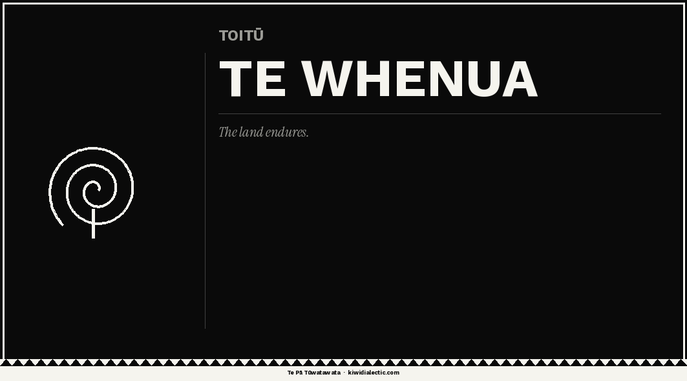
{kind=link}
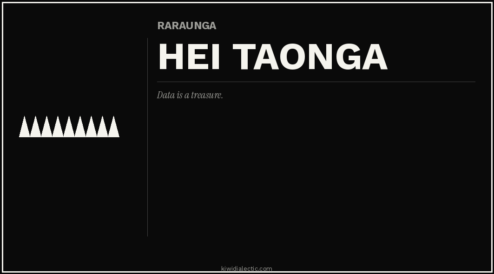
{kind=link}
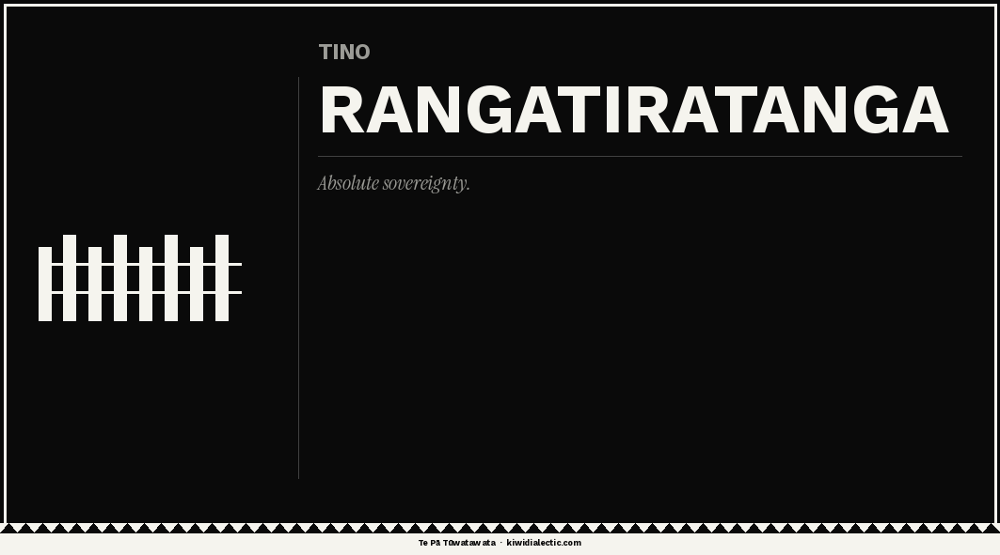
{kind=link}
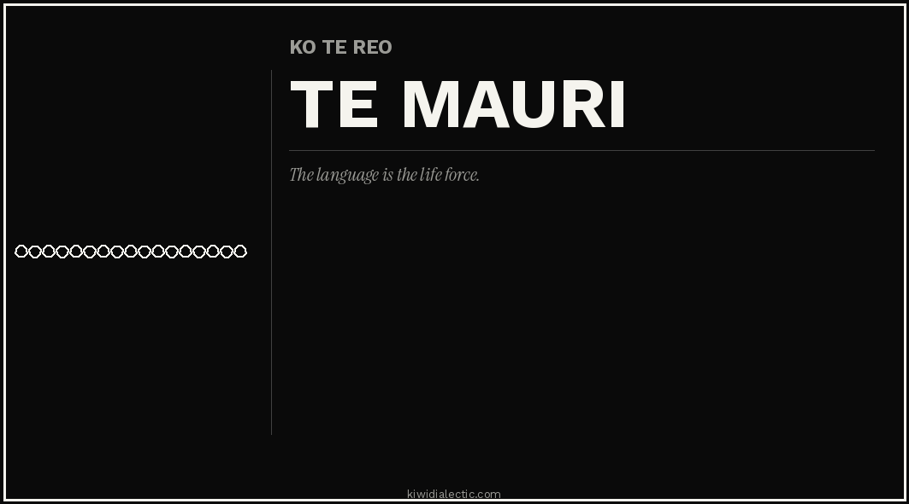
Square — 85×85mm (pole/wall sticker)
{kind=link}
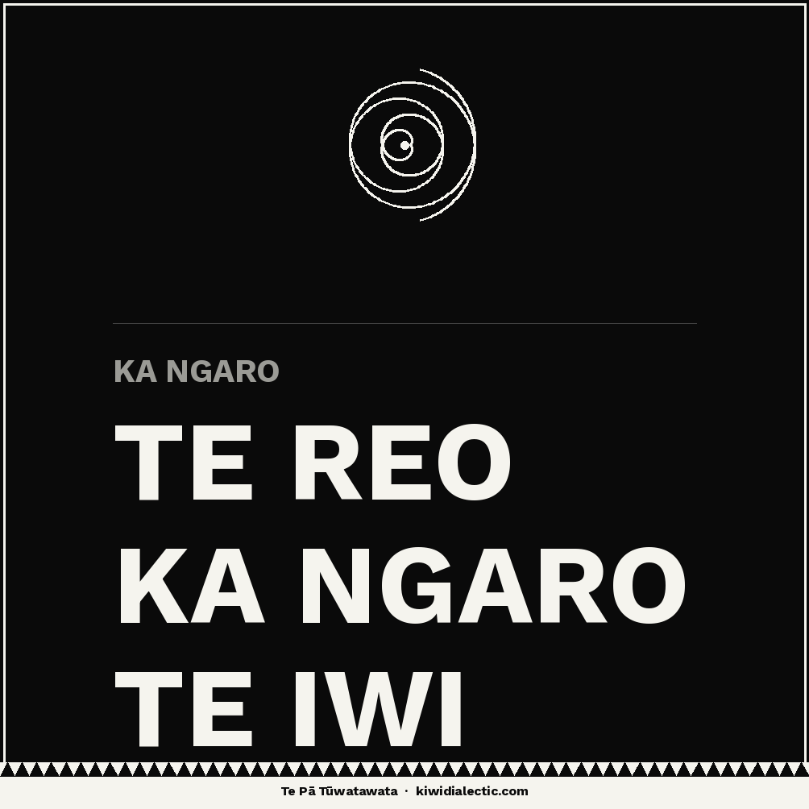
{kind=link}
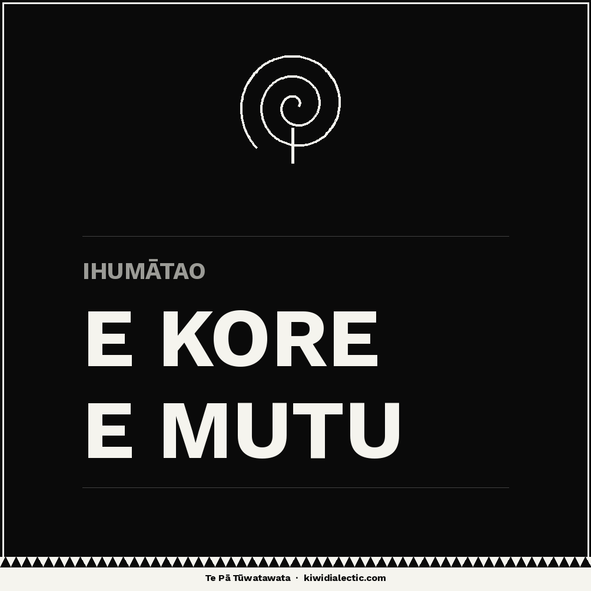
{kind=link}
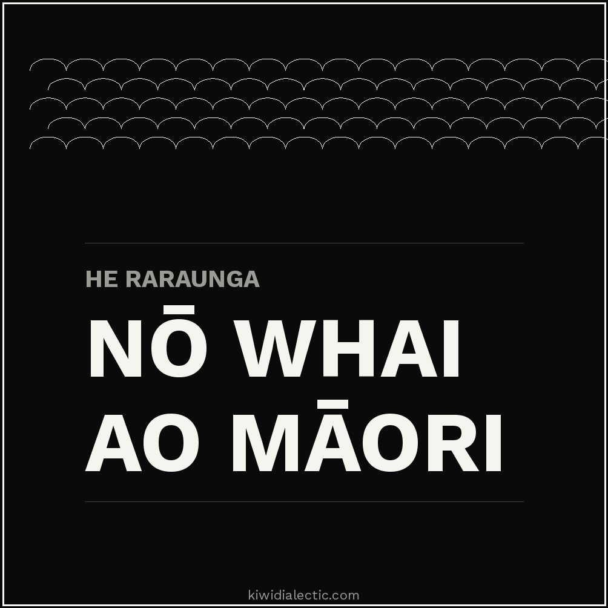
{kind=link}
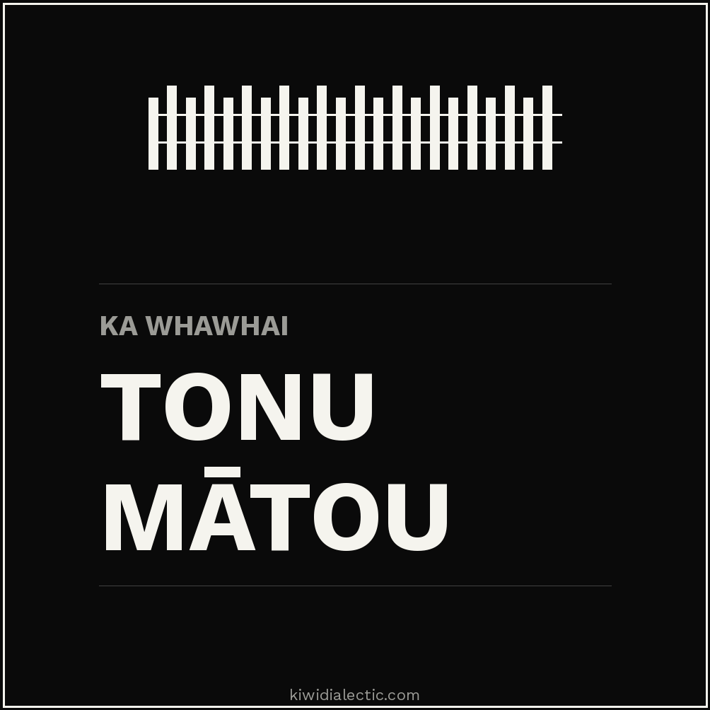
Circle — 80mm diameter (helmet/bin sticker)
{kind=link}
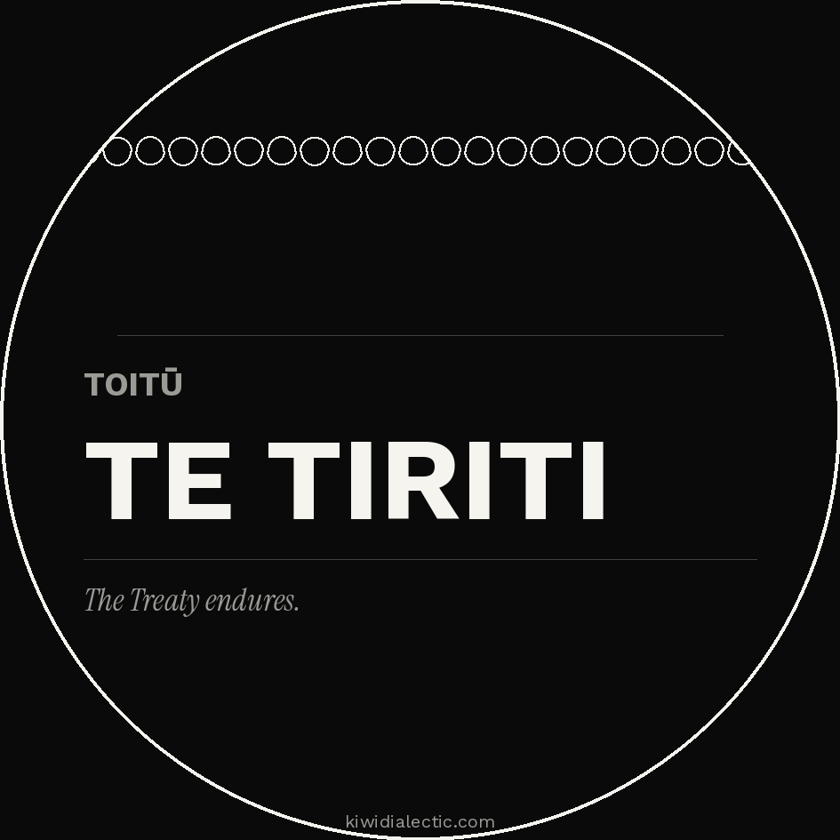
{kind=link}
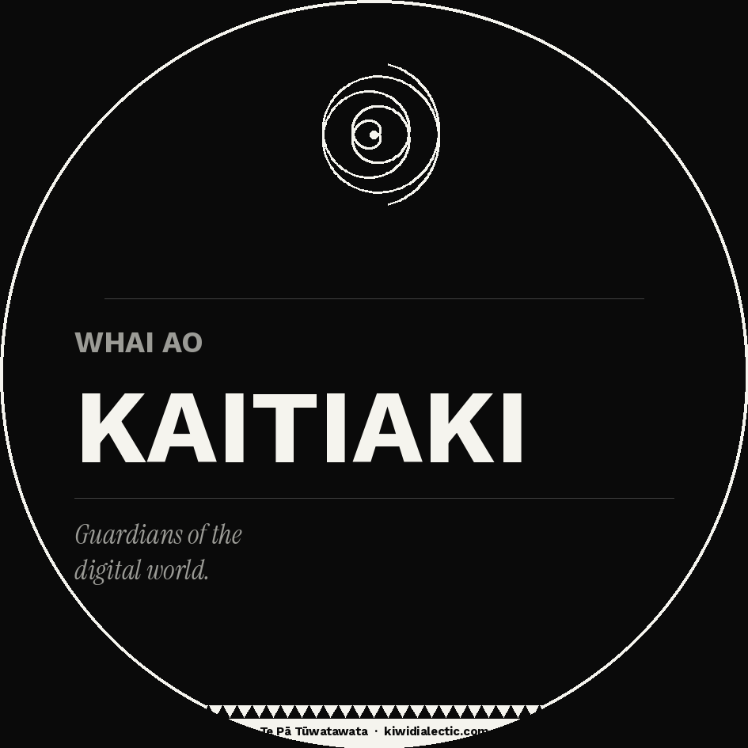
{kind=link}
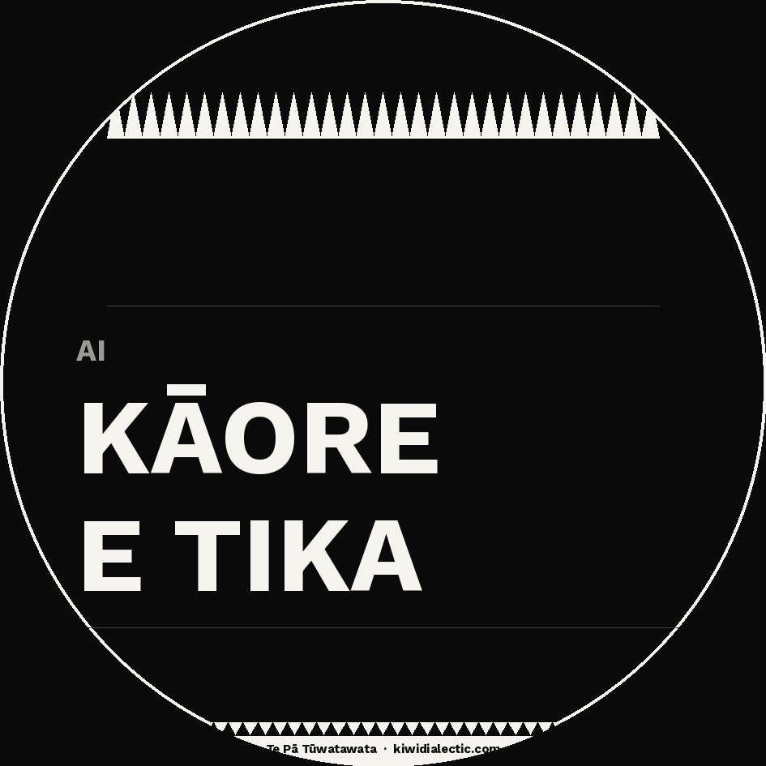
{kind=link}
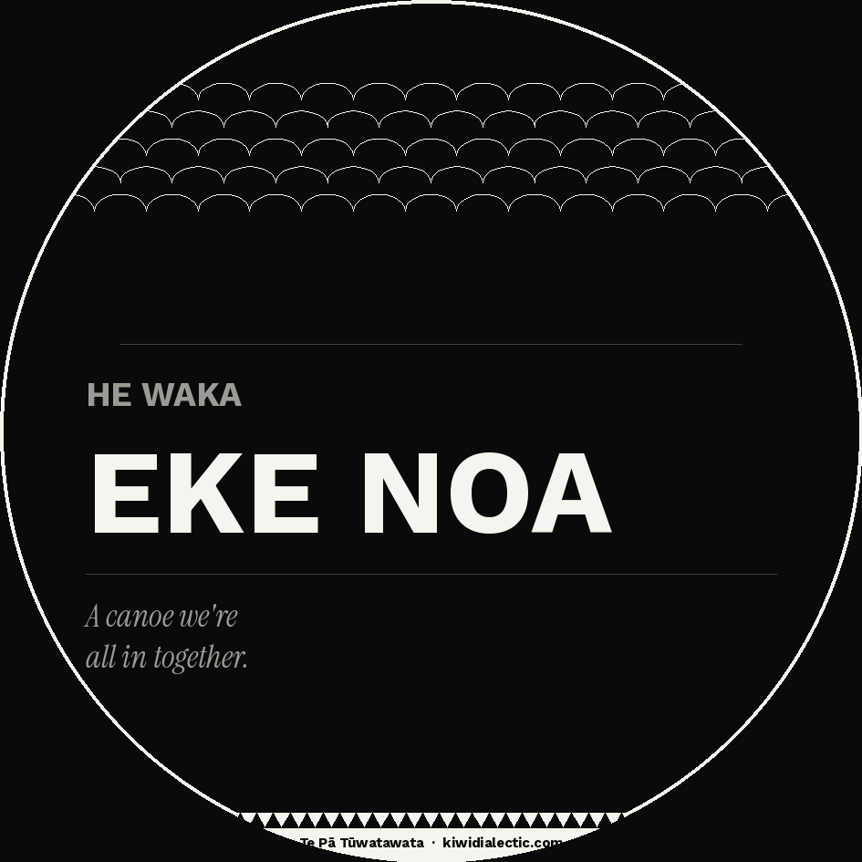
{kind=link}
Download printable sheet
All 12 stickers on one A4 sheet at 300dpi. Print at home or take to a print shop. Cut and paste up.
↓ Download PNG sheet ZIPDownload all stickers
12 individual PNG files + A4 sheet. 300dpi, print-ready. All 3 formats: rectangle, square, circle.
↓ Download ZIPFree to print and distribute for non-commercial activist use under CC BY-NC-SA 4.0. Created by The Kiwi Dialectic.
He aratohu — Deployment guide
Print & cut
Download SVG or PNG. Print on sticker paper at Warehouse Stationery, PaperPlus, or any copy shop. A4 sheets cost $2–5. Print 10 at once — they go fast.
Where to place
Power boxes and lamp posts near universities and marae. Laptop covers at wānanga. Skate parks. Community notice boards. Inside library books. On your own gear — normalise visibility.
Digital stickering
Add SVG stickers to your Instagram Stories using the sticker tool. Screenshot and post. Use as profile overlays. Paste onto photo backgrounds in Canva for shareable posts. The motif travels.
QR code extension
Generate a QR code linking to this course. Print it onto the A4 sticker sheet alongside the designs. Anyone who scans it lands on a free education. Rhizome logic in action.
Post when you put them up
X: "Just deployed some #KiwiDialectic stickers around [city]. Tino Rangatiratanga in the streets. Download them free and print your own 👉 [link] #MāoriDataSovereignty #StreetActivism" Instagram: Photo of sticker in situ. Caption: "Ko tātou he kahu. We are the armour. Unaunahi stickers — free to download and print. Link in bio. #KiwiDialectic #TinoRangatiratanga #MāoriArt" TikTok hook: "I printed indigenous data sovereignty stickers for 50 cents each. Here's where I put them. [show each location]. Download free at [link]. #MāoriActivism #DataSovereignty"
Ngā puna — Sources
Further reading
- tepatuwatawata.io — Te Pā Tūwatawata official initiative
- kahuiraraunga.io — Kāhui Raraunga, Māori Data Governance
- temanararaunga.maori.nz — Te Mana Raraunga Collective
- Māori Data Governance Model — Kāhui Raraunga framework document
- tehiku.nz — Te Hiku Media: community-owned te reo Māori AI
- CARE Principles for Indigenous Data Governance — Global Indigenous Data Alliance
- kiwidialectic.com — The Kiwi Dialectic publication
Ara mātauranga — Learning pathways
Start here — Māori data sovereignty
- Te Mana Raraunga — charter and principles
- Māori Data Governance Model
- CARE Principles — Indigenous data globally
Go deeper — AI and indigeneity
- Te Hiku Media — kaitiakitanga and AI
- Te Pā Tūwatawata — the infrastructure model
- Kāhui Raraunga — governance in practice
Radical pedagogy tradition
- Pedagogy of the Oppressed — Paulo Freire
- Debt: The First 5,000 Years — David Graeber
- Mutual Aid — Peter Kropotkin
- Thousand Plateaus — Deleuze & Guattari
Connect + continue
- The Kiwi Dialectic — follow for more
- GitHub repo — all source files
- Share using #KiwiDialectic on any platform
- Print, remix, redistribute — CC BY-NC-SA 4.0
Tū māia — Stand firm
Ko tātou te anamata rangatira.
We are the sovereign future. Take this course. Share it. Print the stickers. Post the memes. Teach the modules. Organise rhizomatically. The digital pā is built one scale at a time.
{kind=link}
{kind=link}
{kind=link}
{kind=link}
{kind=link}
{kind=link}
{kind=link}
{kind=link}
{kind=link}
{kind=link}
{kind=link}
{kind=link}
{kind=link}
{kind=link}
{kind=link}
{kind=link}
{kind=link}
{kind=link}
{kind=link}
{kind=link}
{kind=link}
{kind=link}
{kind=link}
Papaho pāpāho / Kit de Mídia Social / Mídias Sociais — Social media kit
Campaign & messaging kit — All 30 motifs
30 motifs across 11 cultures — Māori, Samoan, Pacific, Tongan, Fijian, Guaraní, Shipibo-Conibo, Guna, Kayapó, Yanomami, and Amazonian. Each with activist meme images, motif artwork, hashtag sets, and course module links. All content CC BY-NC-SA 4.0 — free to use and share.
Explore by culture
Ngā meme whakahau — Campaign memes
6 memes × 5 languages · Click the cover image for the bilingual original, or grab a single-language version below each card. EN English · MI Te Reo Māori · PT Português · GN Guaraní · SM Gagana Sāmoa
Culture / Cultura
Māori
Te Reo Māori · Aotearoa New Zealand
#TeReoMāori #DataSovereignty #IndigenousData #TeManaRaraunga #Whakapapa
Koru
Koru
Meme / Activist image
Nova vida, potencial se desdobrando, o ponto de origem de todas as coisas. Algo está começando — ou …
Module 1: What is Data? · Módulo 1: O Que São Dados?
Pā Tūwatawata
Pā Tūwatawata
Meme / Activist image
A paliçada fortificada — proteção coletiva, soberania sobre o espaço e a governança.…
Module 1: What is Data? · Módulo 1: O Que São Dados?
Niho Taniwha
Niho Taniwha
Meme / Activist image
Os dentes do taniwha — a mordida colonial, extração sem consentimento, dano que deve ser nomeado.…
Module 2: Data Colonialism · Módulo 2: Colonialismo de Dados
Kōwhaiwhai
Kōwhaiwhai
Meme / Activist image
A lei escrita na viga. Um conflito entre tikanga e estatuto, autoridade ancestral e poder estatal.…
Module 3: CARE & Sovereignty · Módulo 3: CARE e Soberania
Unaunahi
Unaunahi
Meme / Activist image
Escamas de peixe entrelaçadas. Este momento exige resposta coletiva — juntas formam armadura.…
Module 4: Land & Territory · Módulo 4: Terra e Território
Takarangi
Takarangi
Meme / Activist image
A espiral dupla — história se repetindo, passado e futuro enrolados juntos.…
Module 4: Land & Territory · Módulo 4: Terra e Território
Pikorua
Pikorua
Meme / Activist image
O twist duplo — duas vidas, duas culturas, sempre unidas. Caminhos que se separam sempre voltam. O s…
Module 4: Land & Territory · Módulo 4: Terra e Território
Manaia
Manaia
Meme / Activist image
O guardião espiritual — mensageiro entre o mundo dos vivos e o reino espiritual. Protetor. O duplo e…
Module 3: CARE & Sovereignty · Módulo 3: CARE e Soberania
Mangōpare
Mangōpare
Meme / Activist image
O tubarão-martelo — coragem, determinação, força. O lutador que não recua. Resolução guerreira.…
Module 2: Data Colonialism · Módulo 2: Colonialismo de Dados
Culture / Cultura
Sāmoa
Gagana Sāmoa · Samoa / American Samoa
#FaaSamoa #Gagana #PacificData #IndigenousTech #OceanicRights
Niho Mano
Niho Mano (Shark Teeth)
Meme / Activist image
Força, proteção, orientação e ferocidade. O tubarão é um espírito guardião reverenciado na cosmologi…
Module 6: Indigenous AI Futures · Módulo 6: Futuros Indígenas com IA
Fa'a Atualoa / Ātualoa
Atualoa (Centipede)
Meme / Activist image
Força, resistência e compromisso com a família extensa (aiga). A centopeia é venenosa e simboliza o …
Module 5: Collective Knowledge · Módulo 5: Conhecimento Coletivo
Fetu / Fa'a Aveau
Fetu (Star)
Meme / Activist image
Navegação, esperança e conexão espiritual com os ancestrais e os céus. As estrelas guiavam os navega…
Module 5: Collective Knowledge · Módulo 5: Conhecimento Coletivo
Malu
Malu (Diamond / Women's Protection)
Meme / Activist image
Proteção e abrigo. Toda a tatuagem feminina (malu) leva o nome deste motivo. 'Malu' significa 'prote…
Module 3: CARE & Sovereignty · Módulo 3: CARE e Soberania
'Aso / 'Aso Fa'aifo
Aso (Rafters of the Fale)
Meme / Activist image
Abrigo, proteção, família e lar. O 'aso representa os caibros da tradicional casa oval samoana (fale…
Module 6: Indigenous AI Futures · Módulo 6: Futuros Indígenas com IA
Fa'a 'Au'upega / Upega
Fa'a 'Au'upega (Net / Community Weave)
Meme / Activist image
Interdependência comunitária, esforço coletivo e a prática da pesca. O motivo da rede (upega) simbol…
Module 5: Collective Knowledge · Módulo 5: Conhecimento Coletivo
Pe'a / Malofie
Pe'a (Sacred Male Tattoo / Flying Fox)
Meme / Activist image
Rito de passagem sagrado que marca a virilidade samoana, o status social e o pacto com os ancestrais…
Module 6: Indigenous AI Futures · Módulo 6: Futuros Indígenas com IA
Culture / Cultura
Te Moana-nui-a-Kiwa — Pacific
Pacific languages · Pacific Ocean
#MoanaNuiAKiwa #PacificFutures #VoyagingData #TeMonaanui
Va'a (Samoan) / Waka (Māori/Cook Islands) / Vaka (Fijian/Tongan)
Va'a / Waka (Outrigger Canoe)
Meme / Activist image
Navegação, ancestralidade, liberdade e a reivindicação do Oceano Pacífico como pátria indígena. A ca…
Module 1: What is Data? · Módulo 1: O Que São Dados?
Culture / Cultura
Tonga
Lea Faka-Tonga · Kingdom of Tonga
#LeaFakaTonga #TonganCulture #PacificSovereignty #Manulua
Manulua
Manulua (Two Birds / Interlocking Alliance)
Meme / Activist image
Unidade, aliança e a ligação das relações sociais. 'Dois pássaros' — as formas emparelhadas represen…
Module 4: Land & Territory · Módulo 4: Terra e Território
Culture / Cultura
Viti — Fiji
iTaukei / Fijian · Fiji Islands
#iTaukei #FijianCulture #Masi #DataRights #PacificData
Masi Kesa / Bolabola
Masi Kesa (Fijian Stencilled Barkcloth)
Meme / Activist image
Identidade de clã, patente e proteção espiritual. Cada sub-clã (tokatoka) possui motivos de masi esp…
Module 4: Land & Territory · Módulo 4: Terra e Território
Vonu
Vonu (Sea Turtle)
Meme / Activist image
Longevidade, resistência, navegação e a conexão entre terra e mar. O vonu é um símbolo de sabedoria …
Module 4: Land & Territory · Módulo 4: Terra e Território
Culture / Cultura
Guaraní
Avañe'ẽ (Guaraní) · Paraguay / Brazil / Bolivia
#Guaraní #AvaNeé #DemarcaçãoJá #DataSoberania #SoberaniadeDados
Yvy marã e'ỹ
Yvy Marã Eÿ (Land Without Evil)
Meme / Activist image
Terra sem males: paraíso mítico guaraní, livre de fome, guerra e doenças. Alcançável apenas por quem…
Module 1: What is Data? · Módulo 1: O Que São Dados?
Cuaracy Ra'Angaba
Cuaracy Ra'Angaba (Solar Calendar / Image of the Sun)
Meme / Activist image
Relógio solar e lunar dos Guaraní. 'Cuaracy' = sol; 'Ra'angaba' = imagem. Símbolo do círculo eterno …
Module 5: Collective Knowledge · Módulo 5: Conhecimento Coletivo
Ñandutí
Ñandutí (Spider Web Lace)
Meme / Activist image
Renda paraguaia tradicional cujo nome em guaraní significa 'teia de aranha'. Criada por mulheres gua…
Module 4: Land & Territory · Módulo 4: Terra e Território
Jaguarový (Blue Jaguar) / Jagua Pytã (Red Jaguar)
Jagua Pytã / Jaguarový (Guaraní Cosmic Jaguar)
Meme / Activist image
Na cosmologia guaraní, o Jaguar Azul (Jaguarový) está contido na cabana de Nhamandu em Yvy Marã Eÿ. …
Module 6: Indigenous AI Futures · Módulo 6: Futuros Indígenas com IA
Culture / Cultura
Shipibo-Conibo
Shipibo-Conibo · Peruvian Amazon
#ShipiboKené #AmazôniaVive #DadosIndigenas #COICA #IndigenousAI
Kené (also: quené, keno)
Kené (Shipibo Cosmic Geometric Design)
Meme / Activist image
Padrões geométricos tradicionais shipibo-conibo pintados em cerâmica, têxteis e corpos. Expressam a …
Module 5: Collective Knowledge · Módulo 5: Conhecimento Coletivo
Ronin Kuin (also: rono ewa)
Ronin Kuin (Primordial Anaconda / Cosmic Serpent)
Meme / Activist image
A anaconda primordial que cantou o universo à existência na cosmologia shipibo-conibo. O padrão de s…
Module 5: Collective Knowledge · Módulo 5: Conhecimento Coletivo
Culture / Cultura
Guna (Kuna)
Dulegaya · Panama / Colombia
#GunaYala #Mola #PanamaIndígena #DatosIndígenas #COONAPIP
Mola
Mola (Guna Reverse Appliqué Panel)
Meme / Activist image
Painéis têxteis artesanais usados pelas mulheres guna do Arquipélago de San Blas, Panamá. Seus desig…
Module 3: CARE & Sovereignty · Módulo 3: CARE e Soberania
Culture / Cultura
Kayapó
Kayapó · Brazilian Amazon (Pará)
#Kayapó #Amazônia #APIB #DemarcaçãoJá #TerritorioSagrado
Meï-kà (jaguar pattern, lit. 'jaguar-like')
Kayapó Jaguar Body Division Pattern
Meme / Activist image
A onça é o animal-espírito por excelência dos Kayapó. A divisão bilateral do corpo em metade vermelh…
Module 2: Data Colonialism · Módulo 2: Colonialismo de Dados
Culture / Cultura
Yanomami
Yanomami · Brazil / Venezuela Amazon
#Yanomami #UrihaA #CéuCaindo #DadosIndígenas #APIB
Urihi a
Urihi a (Forest-Land Cosmos / Falling Sky)
Meme / Activist image
Urihi a = floresta-terra: o mundo habitado dos Yanomami. A cosmovisão estratificada em camadas. 'A q…
Module 2: Data Colonialism · Módulo 2: Colonialismo de Dados
Culture / Cultura
Amazônia — Pan-Amazonian
Português / Indigenous · Brazil / Pan-Amazon
#LutaPelaVida #APIB #DemarcaçãoJá #AmazôniaÉNossa #PovosIndigenas
Luta pela Vida (Pt); Ore arandu rekove (Guaraní concept)
Luta pela Vida (Struggle for Life — Political Body Paint)
Meme / Activist image
O acampamento 'Luta pela Vida' (agosto-setembro 2021), organizado pela APIB em Brasília, foi a maior…
Module 2: Data Colonialism · Módulo 2: Colonialismo de Dados
Ngā akoranga — Teaching kits · Materiais Didáticos